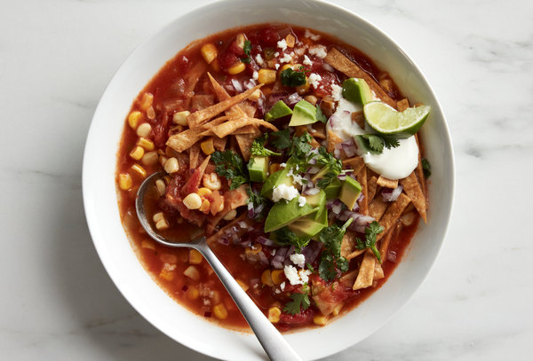
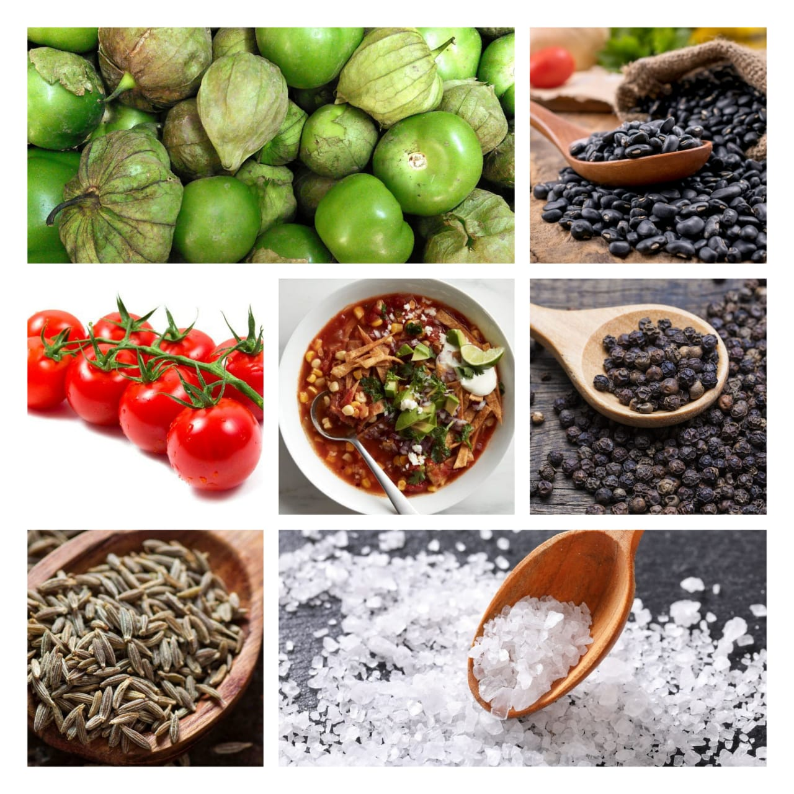

tortilla soup
Home
Here's one of our favorite vegetarian Mexican recipes because of the intense flavor it packs in just over 30 minutes! The secret here is adobo sauce from a can of chipotle chilis: it brings in a smoky flavor without adding too much heat! It's filled with black beans, peppers, and corn, and topped with homemade crunchy tortilla strips. It's a crowd pleaser every time.This vegetarian tortilla soup tastes like it's been simmering all day

Ingredients
6 6-inch corn tortillas
Olive oil,Kosher salt
1 yellow onion
1 green bell pepper
4 garlic cloves
2 15-ounce black beans
2 spoons extra-virgin olive oil
2 teaspoons dried oregano
1 teaspoon cumin
1 28-ounce can crushed tomatoes
1½ cups frozen corn
1 tablespoon adobo sauce
4 radishes, for garnish
1 lime, for garnish
1 handful cilantro, for garnish
1 quart (4 cups)

Nutrition Facts
Calories 60
Total Fat 0.82g
Cholesterol 4mg
Sodium 347mg
Total Carbohydrate 4.16g
Vitamin C 0%
Vitamin A 0%
Procedure
Heat oven to 375°F. Brush the tortillas lightly with olive oil on each side. Using a pizza cutter, slice them in half, then into thin strips.
Place the strips on a baking sheet and sprinkle with kosher salt. Bake for 10 to 12 minutes until crispy and lightly browned.
Peel and dice the onion. Dice the green pepper. Peel and mince the garlic. Drain and rinse the beans.
In a large pot or Dutch oven, heat 2 tablespoons olive oil and sauté the onion until translucent, about 5 minutes. Add the green pepper and the garlic and sauté for 2 minutes. Stir in the oregano and the cumin for 1 minute.
Add the tomatoes, beans, corn, adobo sauce, broth, and kosher salt. Bring to a boil, then simmer for 10 minutes. Taste and add additional adobo sauce or kosher salt if desired.
Slice the radishes. Slice the lime into wedges.
To serve, ladle the soup into bowls and allow to cool to warm. Garnish with the tortilla strips, radishes, torn cilantro leaves, hot sauce, and plenty of lime juice.
Expert Guide
Back ←
Scroll to Top ↑